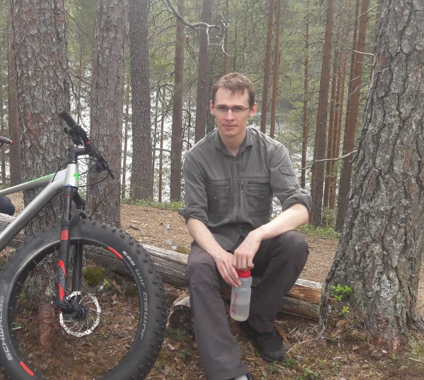

Homepage
Teemu Tyni (Assistant professor, Docent)
Unit of applied and computational mathematics
University of Oulu
Finland
Unit of applied and computational mathematics
University of Oulu
Finland

Contact
Office: M216
email: firstname.lastname@oulu.fi